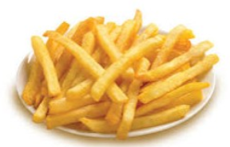

Patatas fritas

Patatas fritas caseras
Ingredientes
3 ó 4 patatas (300gr)
4 dientes de ajo
Aceite de oliva
Sal
Elaboración (Pasos)
Calentae aceite en un sartén
Añadir la patata cortada, la sal y los ajos
Freír al gusto
Servir en plato